Before any of this goes into the game, here is the look: the skin every cave gets, the two regions coming first, and all eight regions' rock, colours, a particle and a creature each. Say OK, or tell me what to change.
The cave corners are rendered from the real block models and textures, lit the way the game lights blocks (block light falling one level a block, the game's light curve at the Bright setting and its warm torch colour, the fixed shading on each face). It isn't the game: no smooth shadows in corners, no Lens, and the particles and creatures stand still. Each corner is shown twice: by your torch, and in flat light so you can see every piece.
Every cave gets this, region or not, made of the rock it sits in: rubble heaped where the floor meets a wall (its high side against the wall), real 3D stalactites and stalagmites in four thicknesses (vanilla's are a flat cross), loose stones, lichen in the depth band's colour, white mineral crust, wet streaks under a dripping roof, a puddle under the drips that takes the cave's water colour, and a dusty web in a dry corner.
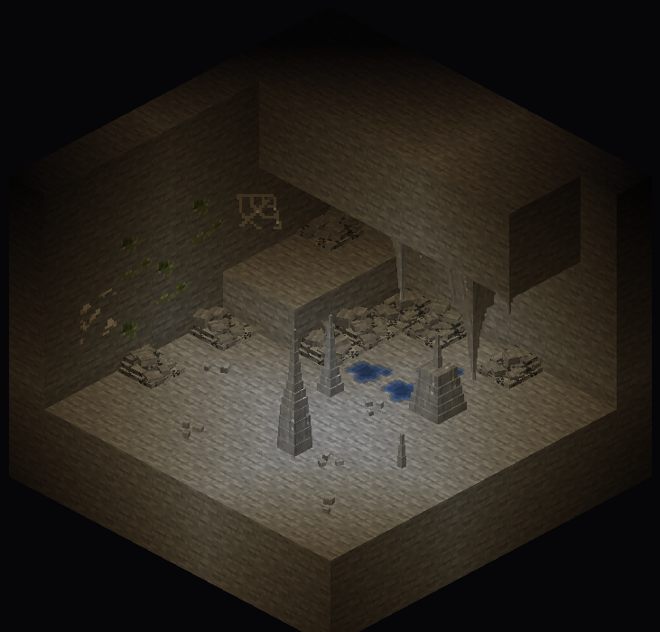
Stone · torch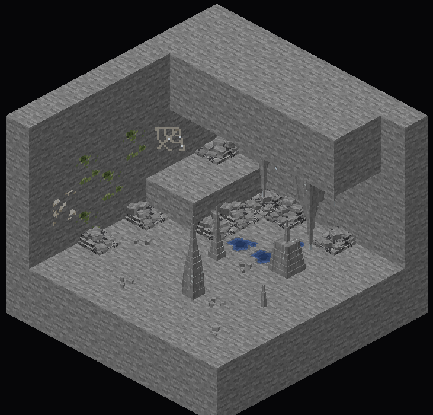
Stone · flat lightShallows (stone). Green-grey lichen on the left wall with a patch of crust; the shelf on the right drips, so stalactites hang from it, stalagmites rise under them, and a puddle lies between. In a plain cave the water is vanilla's blue.
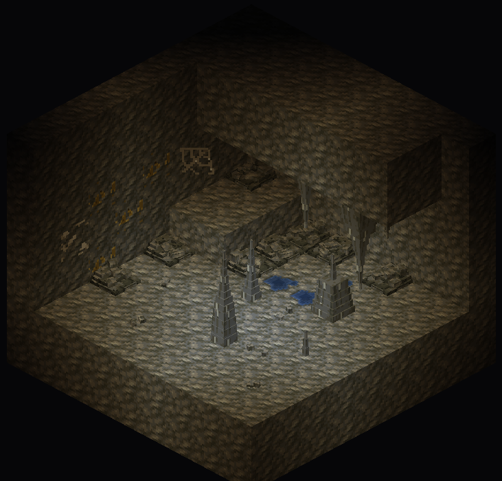
Tuff · torchMiddle Dark (tuff) and the Deep (deepslate). The same kit in each rock's own colours (the middle five shades of every piece are the game's own rock, so a heap reads as fallen from the wall beside it). The lichen turns gold in the Middle Dark and slate-blue in the Deep.
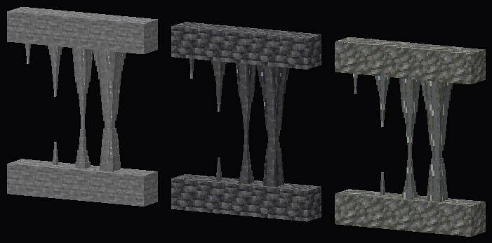
Four thicknesses · stone, deepslate, tuffThe formations taper smoothly over one to four blocks (tip, then a narrowing piece, a middle and a base, as pointed dripstone does) and meet into columns. Each is a few stacked boxes, so the torch catches its sides.
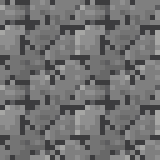
rubble · stone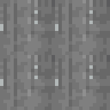
flowstone · stone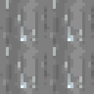
wet tip · stone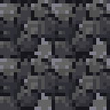
rubble · deepslate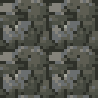
rubble · tuff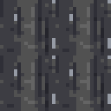
flowstone · deepslate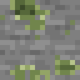
lichen · Shallows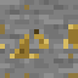
lichen · Middle Dark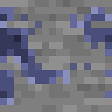
lichen · the Deep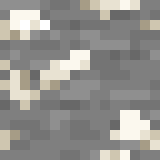
mineral crust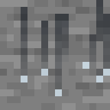
wet streaks (beads glint)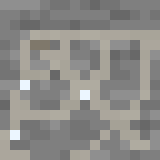
dusty web (dew glints)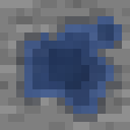
puddle · plain cave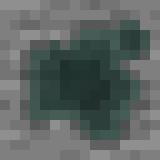
puddle · Rootways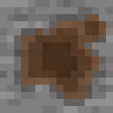
puddle · Ochre DeepThe puddle is animated in the game: a slow shimmer and, now and then, a ring spreading from a drip. Drips themselves fall as particles and splash.
These two come first, and you'll play them in a new world before the other six are made.
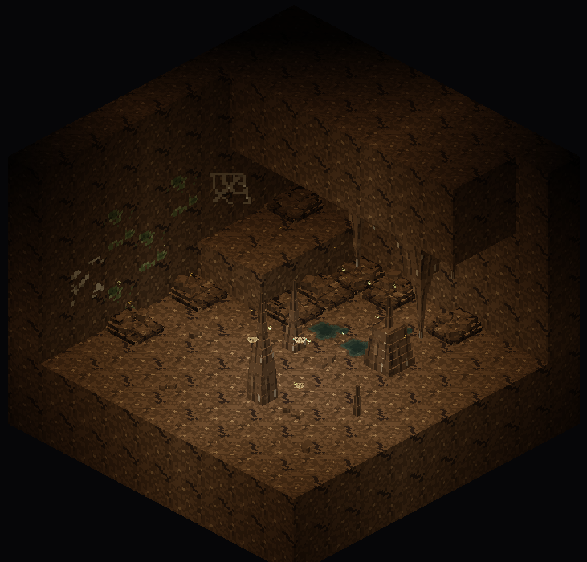
The Rootways · torch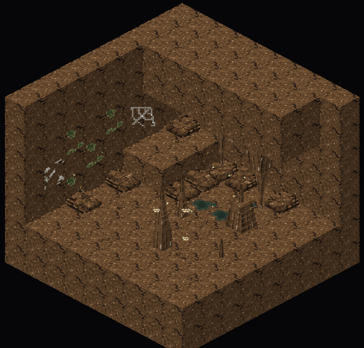
The Rootways · flat lightThe Rootways (the Shallows under forests, taiga and jungle): brown rootstone threaded with old roots, green-grey water, spores and pollen drifting, and pale dusk moths that come to your torch. Root curtains, root arches and teal glowcaps join in P2.
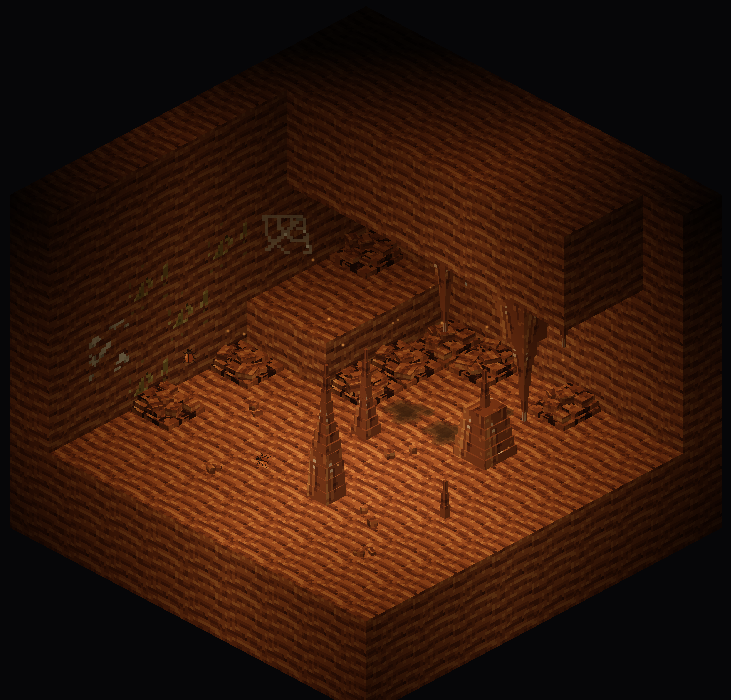
The Ochre Deep · torch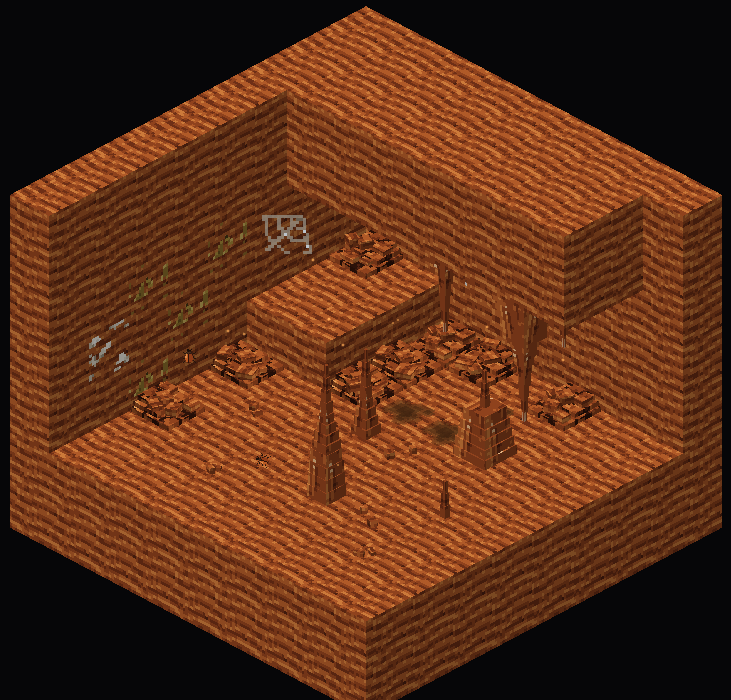
The Ochre Deep · flat lightThe Ochre Deep (the Middle Dark under temperate land): banded red-orange rock, orange drip pools, warm dust in the air, rust beetles on the walls and floor. Its terraces, rust flowstone and the faint glow of ember lichen join in P2.
Each region's colours (its rock from crevice to highlight, then its light), its rock, its particle and its creature. The P3 rocks are first sketches: you're OK-ing the direction and colours; they get their full pass when they're built.
Small life that only your game draws (nothing saved, nothing sent, about 40 at most around you), from one sprite sheet, as the surface's butterflies and dragonflies are: moths' wings hinge and beat, beetles walk the walls, fish turn in pools, bats roost in clusters and scatter as you pass. Our own bodies, not vanilla's bat.
While you look, I'm building the code side of P1 (the blocks, where the skin goes, the drawn light, the underlife's movement, the particles), which doesn't depend on the textures. Nothing of this look goes into the game until you OK it.
Made with tools/art/specs/deep_skin.py (rocks, skin, particles, models), tools/art/specs/deep_life.py (the underlife's sprite sheet) and tools/art/cave_diorama.py (these pictures). Regions, bands and land come from docs/caves/PLAN.md §4.2 and SPEC §42.